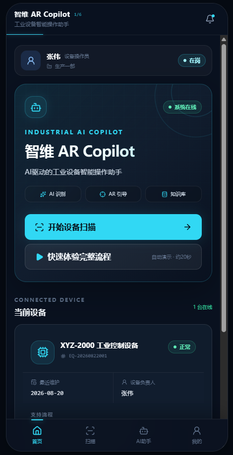
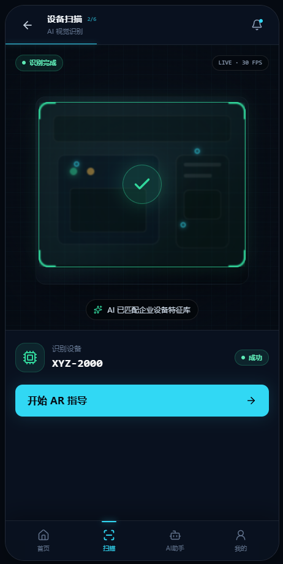
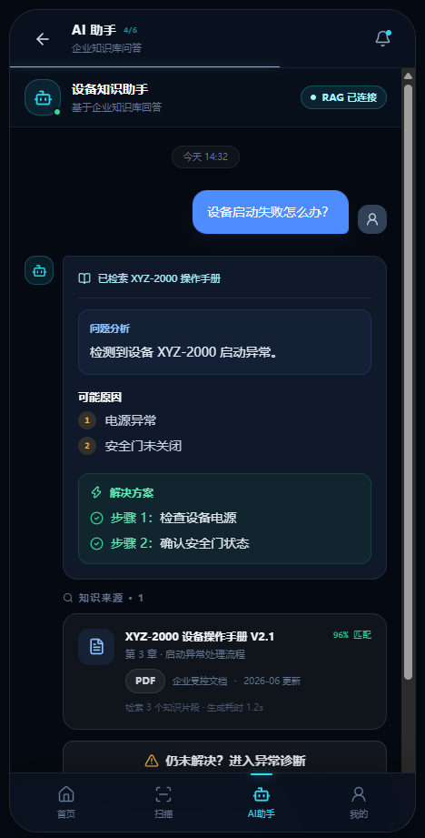
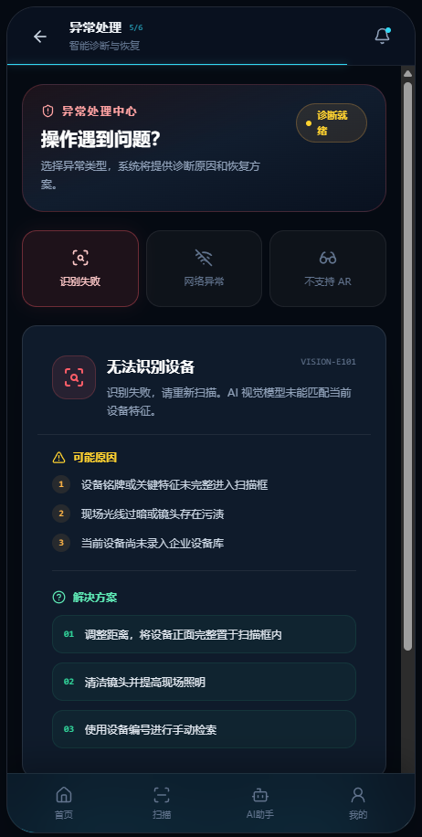

Project 02 · Product Concept
智维 AR Copilot
工业设备AR智能操作助手
面向工业设备新员工，以AR降低空间认知切换，以AI辅助知识查询，并通过异常兜底保证流程可完成。
01 · 项目背景
说明书知道“怎么做”，却很难对应“在哪里做”
新员工不熟悉设备结构、操作步骤复杂，传统说明书与真实设备位置对应困难；出现异常时，也高度依赖有经验人员现场指导。
首次设备操作
日常维护
异常处理
02 · AR价值
为什么需要AR + AI
传统说明书的问题
用户需要在纸质说明和真实设备之间反复切换。
AR价值
将操作信息直接映射到设备空间位置，降低学习成本。
AI价值
结合设备状态和用户问题，提供解释、辅助决策和异常处理。
减少“说明书信息”和“真实设备”之间的认知切换。
03 · 核心流程
从识别设备到完成操作
扫描设备
→
识别设备
→
匹配知识库
→
AR标记位置
→
步骤指导
→
AI辅助问答
→
完成操作
04 · 主要页面
五个页面 / 状态覆盖主要任务

1. 首页
目标：快速开始任务。提供扫描、最近设备与基础帮助入口。

2. 设备扫描
目标：识别当前设备。展示扫描范围、状态和手动型号入口。

3. AR操作指导
目标：完成当前步骤。只呈现必要指示，降低现场信息负担。

4. AI助手
目标：解释术语与操作原因。回答需绑定设备与当前步骤上下文。

5. 异常处理
目标：无法继续时仍有明确出口。提供替代模式或人工帮助。
05 · 异常设计
理想流程之外，保证任务可继续
设备识别失败
→
重新扫描 / 手动输入型号
弱网
→
基础指导模式
设备不支持AR
→
图文步骤模式
AI无法回答
→
相关说明文档 / 人工帮助
06 · 模拟边界
验证产品假设，不宣称真实工业落地
本Demo验证
产品流程、页面交互、AR使用价值、异常处理逻辑。
当前为模拟
设备识别、AR定位、3D叠加、AI设备知识。
尚未接入
真实AR SDK、工业视觉模型、IoT设备、企业设备系统。
这是产品概念验证，不代表已经实现真实工业AR能力。